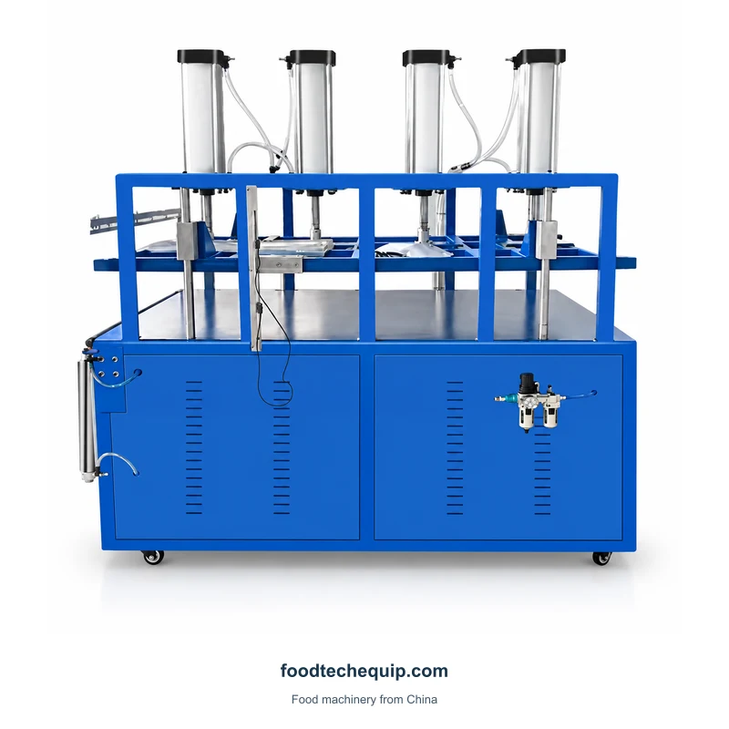

MATERIAL AL CONTENEDOR
Llenado de alimentos líquidos
Compare configuraciones de llenado según la viscosidad, la temperatura de trabajo, las partículas y las dimensiones de la abertura del envase.
Explorar equipos de llenado ↗Explore los detalles de material, embalaje y manipulación que dan forma a una consulta sobre equipos. Comience con la tarea y luego compare los diseños relevantes.
Compare configuraciones de llenado según la viscosidad, la temperatura de trabajo, las partículas y las dimensiones de la abertura del envase.
Explorar equipos de llenado ↗
El formato de la bolsa, el material de la película y el estado de su producto ayudan a definir los requisitos de embalaje. Analice las configuraciones disponibles para su paquete previsto.
Explorar el embalaje en bolsita ↗
Prepare una botella y una tapa compatibles. Compare el tapado mecánico y el sellado con lámina por inducción según el envase y la secuencia de trabajo.
Explorar el taponado de botellas ↗
Defina la porción y cómo fluye el material. Describa cómo llega la dosis a la bolsa o al envase y cuándo se realiza el cierre.
Explorar equipos de dosificación ↗
Compruebe el acceso de carga y el apoyo con la bolsa llena y con la bandeja que utilice. Indique cómo coloca y retira el envase.
Explora el envasado al vacío ↗
Indique las dimensiones de la caja llena, el patrón de cinta y la secuencia de tamaños. Defina por separado las operaciones de flejado y marcado.
Explorar el sellado de cajas de cartón ↗
Defina el lote objetivo, la condición del material y los pasos de carga y descarga antes de seleccionar un mezclador de cubeta horizontal CH.
Explorar equipos de mezcla ↗
Compare equipos de cámara, líneas de sellado con túnel y sistemas de envoltura con manga para cada artículo o grupo de productos.
Explorar el embalaje retráctil ↗
Compare configuraciones de cerradoras industriales según el cuerpo, la tapa y la forma de alimentar y recoger las latas.
Explorar cierre de latas ↗
Defina por separado las necesidades de llenado y sellado. Compare equipos para tubos flexibles según el material, sus dimensiones y el acabado del extremo.
Explorar llenado y sellado de tubos ↗
Defina si la bolsa es de material tejido, no tejido o recubierto, y dónde necesita la unión antes de elegir un equipo de sellado ultrasónico.
Explora el sellado ultrasónico ↗
Compare configuraciones de tapadoras al vacío con un tarro de vidrio, su tapa y las condiciones del producto en el momento del cierre.
Explora el tapado de frascos al vacío ↗
Compare la dosificación por vasos con el pesaje y decida si la máquina debe formar el sobre o alimentar una bolsa preformada.
Explorar el embalaje en bolsita ↗
Defina la porción, la película y el borde de sellado para solicitar una envasadora de sobres con el contorno requerido.
Explorar el embalaje en bolsita ↗
Planifique el recorrido del bulto, la colocación del fleje de PP y los movimientos del personal en una flejadora de arco o de unión lateral.
Explorar flejes ↗
Planifique la entrada de botellas, las tareas del personal y la retirada de envases llenos en equipos compactos o con transportador.
Explorar equipos de llenado ↗
Compare el embalaje por compresión a partir de las dimensiones del bulto, la película y la forma de abrirlo al retirar las prendas.
Explora el envasado al vacío ↗Describa el estado del material, el envase terminado y su manipulación. Indique la producción necesaria para el tamaño elegido y la secuencia de carga y recogida.
Preparar una consulta de equipo ↗Indique qué produce, cómo lo envasa y qué volumen necesita procesar.